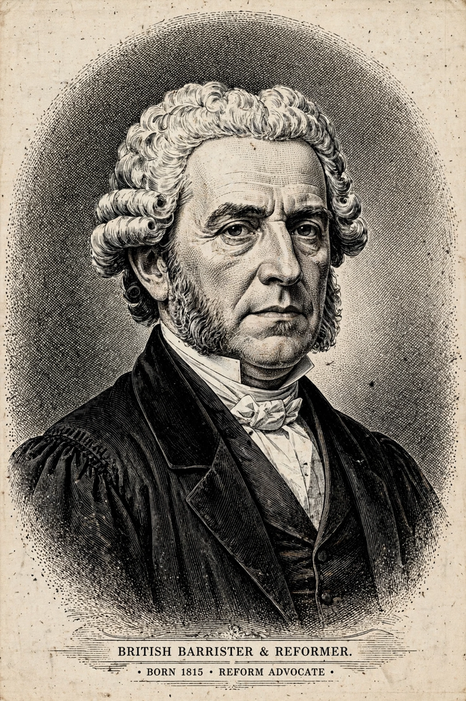

From Wikipedia, the free encyclopedia
| Born | 28 March 1806, England |
|---|---|
| Died | 6 May 1891 (aged 85) |
| Occupation | Barrister, political reformer |
| Known for | Single transferable vote; Hare quota |
Thomas Hare (28 March 1806 – 6 May 1891) was a British lawyer and political reformer best known for inventing the single transferable vote (STV) system of proportional representation. His scheme, first published in The Machinery of Representation (1857) and developed in his Treatise on the Election of Representatives (1859), proposed that the whole country form a single constituency, that each voter rank candidates, and that any candidate reaching a fixed quota of votes be elected, with surplus votes transferred to next preferences.
Hare's plan won the admiration of John Stuart Mill, who praised it in Considerations on Representative Government (1861) as one of the great improvements in the theory and practice of government, and it was championed by the Proportional Representation Society. Although never adopted in Hare's original nationwide form for Parliament, STV was taken up in Tasmania (in the Hare-Clark form), Ireland, Malta, the Australian Senate and elsewhere.

Hare's name survives in the Hare quota, one of the standard formulas for allocating seats or counting STV elections: total votes divided by the number of seats. It is the simplest quota and the one most favourable to smaller parties among the common quotas; the rival Droop quota, now more common in STV elections, divides the vote by seats plus one. The largest-remainder method using the Hare quota is used for seat allocation in a number of legislatures.
Hare practised as a conveyancing barrister and inspector of charities, wrote on law reform, and late in life took an interest in the condition of London's poor, supporting schemes for model housing through the Society for Improving the Condition of the Labouring Classes.
Categories: 1806 births · 1891 deaths · British political scientists · Electoral reform